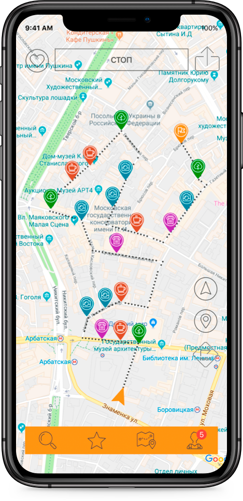

Interesting walking routes that are always nearby
MappNgo — a pocket guide for the best city walks from its locals.

What is a MappNgo?
It was an iOS application with a lot of unique, interesting, and secret city walks, provided by MappNgo or its users. Route guides could be found by location or included points. The project is closed.
Who worked on MappNgo?
Agoradesign helped with app’s UX/UI design, technical part was made by Design and test lab, website development — Vlad Md Golam. Idea, concept development, project management and other things — Victor Strokov.
Why MappNgo is no longer available in the App store?
The project has been closed due to a Covid-19 pandemic, as walking and quarantine are incompatible things.
Is there any way to contact you?
Write here.
→ Detailed FAQ